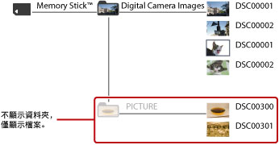
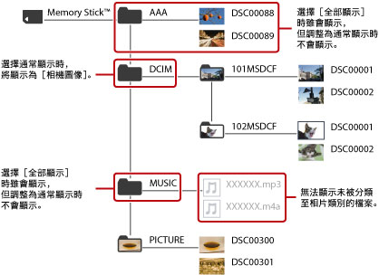

XMB™之基本操作 > 更改內容之顯示方式
更改內容之顯示方式
使用儲存媒體或USB大容量儲存裝置時，大多僅可顯示保存於儲存媒體最上層的以下資料夾。
| 類別 | 資料夾名稱 | |
|---|---|---|
 |
（影像） | VIDEO |
 |
（音樂） | MUSIC |
 |
（相片） |
|
| * |
使用數碼（數位）相機拍攝時，保存以DCF格式記錄之圖像的資料夾。 |
|---|
選擇儲存媒體或USB大容量儲存裝置的圖示後若按下 按鈕，並選擇選項選單的［全部顯示］，則可能會顯示上述以外的資料夾。
按鈕，並選擇選項選單的［全部顯示］，則可能會顯示上述以外的資料夾。
通常顯示的一例
進入（相片）並選擇Memory Stick™時

全部顯示的一例
進入（相片）並選擇Memory Stick™時

提示
- 選擇［全部顯示］時，會顯示保存於儲存媒體之所有資料夾和PS3™可顯示播放的所有檔案。
- 顯示播放CD-R等資料光碟時，會於開始顯示時即顯示所有資料夾。
- 部分PS3™機種需於使用儲存媒體時，搭配非隨附的USB讀卡機等。